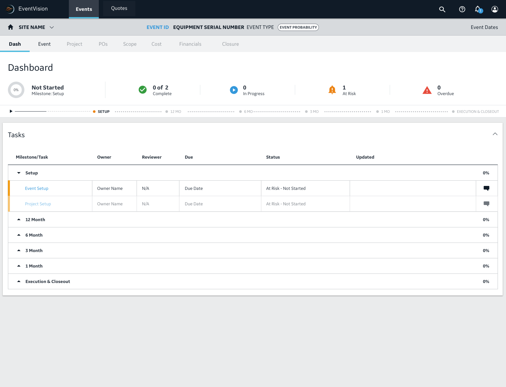

Business Discovery
Understanding the Business Process
The first step was to meet with business stakeholders to understand the intended business process behind the Go To Market functionality.
During this discussion, I created an information architecture diagram and process map outlining the intended wing to wing process.

The Original Solution
After reviewing the business process, we went over the current solution as well as the different solutions the business proposed to improve the workflow.
During UAT, users struggled to access their Events' Project after Event Setup because it was not in an obvious location. Users would have to scroll down on the left bar to find the link to their Project.
While it was clear that the link to Project should be more readily apparent, stakeholders were split on how to present Project tasks to the users.
The “Split” Solution
The first proposed solution was an iteration of the original, where the Project page would be accessed through a button off to the side of the Event page's tabs.
While this solution made sense from an information hierarchy perspective, there were concerns over the constant back-and-forth users would have to do between Event and Project pages.
The "Combined Solution
The other proposed solution was to embed Project tasks as tabs within the Event page, mirroring the business process workflow. It also closely followed the workflow used in FSP, which some stakeholders believed users would be more familiar with.
While this solution streamlined the workflow, we were concerned that accessing Project tasks, which affect multiple Events, inside the tabset of a single Event would create cause confusion to users.
Additionally, there were doubts that the intended business process was true to how users operated. Namely: how would users know what the Project's financials are if they hadn't built their Events' scopes yet?